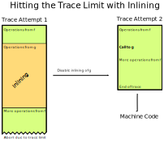
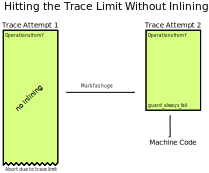
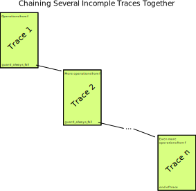

Better JIT Support for Auto-Generated Python Code
Performance Cliffs¶
A common bad property of many different JIT compilers is that of a "performance cliff": A seemingly reasonable code change, leading to massively reduced performance due to hitting some weird property of the JIT compiler that's not easy to understand for the programmer (e.g. here's a blog post about the fix of a performance cliff when running React on V8). Hitting a performance cliff as a programmer can be intensely frustrating and turn people off from using PyPy altogether. Recently we've been working on trying to remove some of PyPy's performance cliffs, and this post describes one such effort.
The problem showed up in an issue where somebody found the performance of their website using Tornado a lot worse than what various benchmarks suggested. It took some careful digging to figure out what caused the problem: The slow performance was caused by the huge functions that the Tornado templating engine creates. These functions lead the JIT to behave in unproductive ways. In this blog post I'll describe why the problem occurs and how we fixed it.
Problem¶
After quite a bit of debugging we narrowed down the problem to the following reproducer: If you render a big HTML template (example) using the Tornado templating engine, the template rendering is really not any faster than CPython. A small template doesn't show this behavior, and other parts of Tornado seem to perform well. So we looked into how the templating engine works, and it turns out that the templates are compiled into Python functions. This means that a big template can turn into a really enormous Python function (Python version of the example). For some reason really enormous Python functions aren't handled particularly well by the JIT, and in the next section I'll explain some the background that's necessary to understand why this happens.
Trace Limits and Inlining¶
To understand why the problem occurs, it's necessary to understand how PyPy's trace limit and inlining works. The tracing JIT has a maximum trace length built in, the reason for that is some limitation in the compact encoding of traces in the JIT. Another reason is that we don't want to generate arbitrary large chunks of machine code. Usually, when we hit the trace limit, it is due to inlining. While tracing, the JIT will inline many of the functions called from the outermost one. This is usually good and improves performance greatly, however, inlining can also lead to the trace being too long. If that happens, we will mark a called function as uninlinable. The next time we trace the outer function we won't inline it, leading to a shorter trace, which hopefully fits the trace limit.

In the diagram above we trace a function f, which calls a function g, which
is inlined into the trace. The trace ends up being too long, so the JIT
disables inlining of g. The next time we try to trace f the trace will
contain a call to g instead of inlining it. The trace ends up being not too
long, so we can turn it into machine code when tracing finishes.
Now we know enough to understand what the problem with automatically generated code is: sometimes, the outermost function itself doesn't fit the trace limit, without any inlining going on at all. This is usually not the case for normal, hand-written Python functions. However, it can happen for automatically generated Python code, such as the code that the Tornado templating engine produces.
So, what happens when the JIT hits such a huge function? The function is traced until the trace is too long. Then the trace limits stops further tracing. Since nothing was inlined, we cannot make the trace shorter the next time by disabling inlining. Therefore, this happens again and again, the next time we trace the function we run into exactly the same problem. The net effect is that the function is even slowed down: we spend time tracing it, then stop tracing and throw the trace away. Therefore, that effort is never useful, so the resulting execution can be slower than not using the JIT at all!
Solution¶
To get out of the endless cycle of useless retracing we first had the idea of simply disabling all code generation for such huge functions, that produce too long traces even if there is no inlining at all. However, that lead to disappointing performance in the example Tornado program, because important parts of the code remain always interpreted.
Instead, our solution is now as follows: After we have hit the trace limit and no inlining has happened so far, we mark the outermost function as a source of huge traces. The next time we trace such a function, we do so in a special mode. In that mode, hitting the trace limit behaves differently: Instead of stopping the tracer and throwing away the trace produced so far, we will use the unfinished trace to produce machine code. This trace corresponds to the first part of the function, but stops at a basically arbitrary point in the middle of the function.
The question is what should happen when execution reaches the end of this unfinished trace. We want to be able to cover more of the function with machine code and therefore need to extend the trace from that point on. But we don't want to do that too eagerly to prevent lots and lots of machine code being generated. To achieve this behaviour we add a guard to the end of the unfinished trace, which will always fail. This has the right behaviour: a failing guard will transfer control to the interpreter, but if it fails often enough, we can patch it to jump to more machine code, that starts from this position. In that way, we can slowly explore the full gigantic function and add all those parts of the control flow graph that are actually commonly executed at runtime.

In the diagram we are trying to trace a huge function f, which leads to
hitting the trace limit. However, nothing was inlined into the trace, so
disabling inlining won't ensure a successful trace attempt the next time.
Instead, we mark f as "huge". This has the effect that when we trace it again
and are about to hit the trace limit, we end the trace at an arbitrary point by
inserting a guard that always fails.

If this guard failure is executed often enough, we might patch the guard and
add a jump to a further part of the function f. This can continue potentially
several times, until the trace really hits and end points (for example by
closing the loop and jumping back to trace 1, or by returning from f).
Evaluation¶
Since this is a performance cliff that we didn't observe in any of our benchmarks ourselves, it's pointless to look at the effect that this improvement has on existing benchmarks – there shouldn't and indeed there isn't any.
Instead, we are going to look at a micro-benchmark that came out of the original bug report, one that simply renders a big artificial Tornado template 200 times. The code of the micro-benchmark can be found here.
All benchmarks were run 10 times in new processes. The means and standard deviations of the benchmark runs are:
| Implementation | Time taken (lower is better) |
|---|---|
| CPython 3.9.5 | 14.19 ± 0.35s |
| PyPy3 without JIT | 59.48 ± 5.41s |
| PyPy3 JIT old | 14.47 ± 0.35s |
| PyPy3 JIT new | 4.89 ± 0.10s |
What we can see is that while the old JIT is very helpful for this micro-benchmark, it only brings the performance up to CPython levels, not providing any extra benefit. The new JIT gives an almost 3x speedup.
Another interesting number we can look at is how often the JIT started a trace, and for how many traces we produced actual machine code:
| Implementation | Traces Started | Traces sent to backend | Time spent in JIT |
|---|---|---|---|
| PyPy3 JIT old | 216 | 24 | 0.65s |
| PyPy3 JIT new | 30 | 25 | 0.06s |
Here we can clearly see the problem: The old JIT would try tracing the auto-generated templating code again and again, but would never actually produce any machine code, wasting lots of time in the process. The new JIT still traces a few times uselessly, but then eventually converges and stops emitting machine code for all the paths through the auto-generated Python code.
Related Work¶
Tim Felgentreff pointed me to the fact that Truffle also has a mechanism to slice huge methods into smaller compilation units (and I am sure other JITs have such mechanisms as well).
Conclusion¶
In this post we've described a performance cliff in PyPy's JIT, that of really big auto-generated functions which hit the trace limit without inlining, that we still want to generate machine code for. We achieve this by chunking up the trace into several smaller traces, which we compile piece by piece. This is not a super common thing to be happening – otherwise we would have run into and fixed it earlier – but it's still good to have a fix now.
The work described in this post tiny bit experimental still, but we will release it as part of the upcoming 3.8 beta release, to get some more experience with it. Please grab a 3.8 release candidate, try it out and let us know your observations, good and bad!
Comments